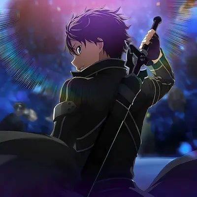

Кіріто

Гравець-одинак і колишній бета-тестер. Єдиний, хто володіє навичкою двох мечів.
Фан-сайт про механіку гри, історію та героїв
6 листопада 2022 року десять тисяч гравців увійшли в гру Sword Art Online і не змогли з неї вийти. Тут ти дізнаєшся, як влаштований світ гри, що сталося на початку та хто в ньому виживав.
Айнкрад — величезний залізний замок, що висить у небі. Він складається зі 100 поверхів. На кожному є місто, лабіринт і бос, якого потрібно перемогти.
Творець гри Каяба Акіхіко оголосив у Місті Початку, що вийти з гри неможливо. Щоб повернутись додому, потрібно пройти всі 100 поверхів. За два роки загинуло близько 4000 гравців.
Коли гравці вперше увійшли в гру, їх несподівано телепортувало на головну площу Міста Початку. Небо стало червоним, а над площею з'явилася велетенська постать у плащі з капюшоном. Це був Каяба Акіхіко, творець Sword Art Online. Він коротко пояснив нові правила:
Наприкінці Каяба зробив ще один хід: кожен гравець знайшов у інвентарі дзеркальце, і в його відображенні з'явилося справжнє обличчя. Усі аватари раптом стали схожими на реальних людей.
Гравці спершу не вірили. Хтось сміявся, що це частина сценарію, хтось шукав меню виходу в усіх закутках інтерфейсу. Але коли над площею загула тривожна тиша, стало зрозуміло, що жарти скінчилися. Десять тисяч людей стояли пліч-о-пліч, і кожен думав про те, що чекає вдома.
Поки натовп кричав і плакав, Кіріто вже ухвалив рішення. Як колишній бета-тестер він знав, що ресурсів на нижніх поверхах мало, а нових гравців занадто багато. Він швидко знайшов Клейна, показав, куди йти по перший досвід, і пішов далі самотою, щоб не підставити друзів. Так для нього почалася гра, у якій кожен день міг стати останнім.

Гравець-одинак і колишній бета-тестер. Єдиний, хто володіє навичкою двох мечів.
Майстриня рапіри, заступниця командира гільдії Лицарі Кривавої Клятви.
Перший друг Кіріто в грі та лідер гільдії Фурінкадзан. Воїн із катаною.
Штучний інтелект, якого Кіріто й Асуна знаходять на 22-му поверсі та ростять як доньку.
Найсильніша гільдія Айнкрада, її очолює Хізкліф.
Найбільша гільдія гри, що стежила за порядком на нижніх поверхах.
Дружня гільдія Клейна, яка часто допомагає Кіріто.
Злий клан убивць на чолі з PoH, що вбивав гравців заради розваги.
Хроніка головних подій світу SAO. Записи завантажуються скриптом через fetch з файлу news.json.
Картки приходять з мого Node.js-сервера: GET-запит до http://localhost:3000/api/projects.